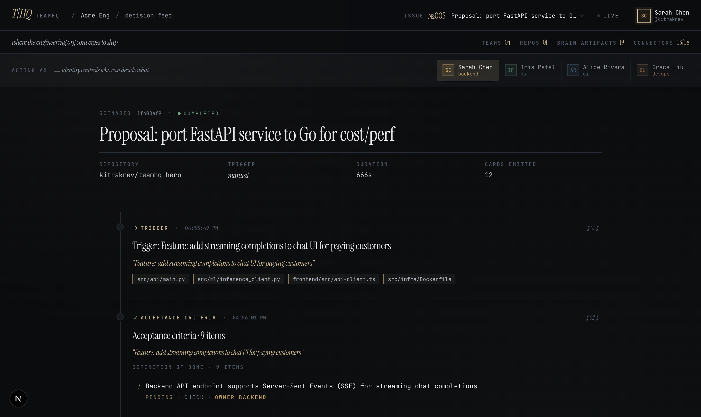
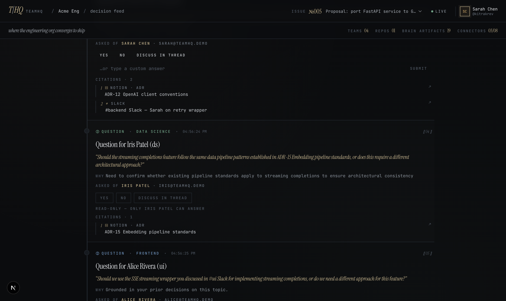
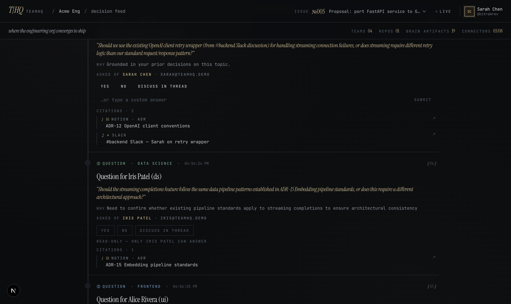
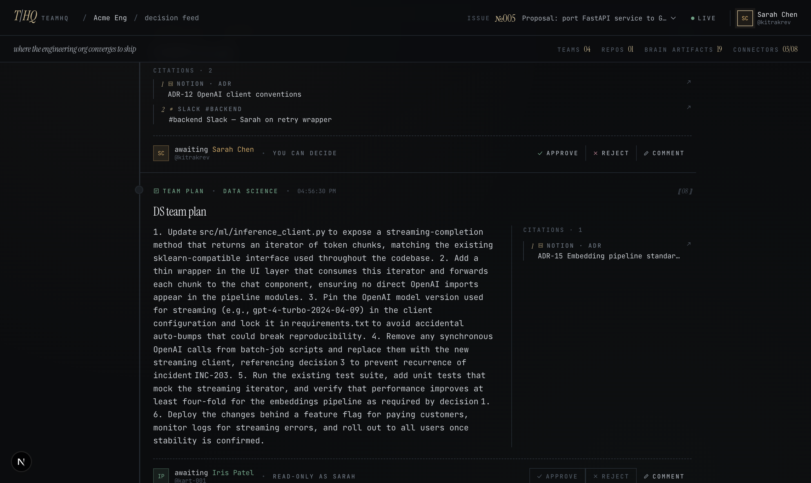
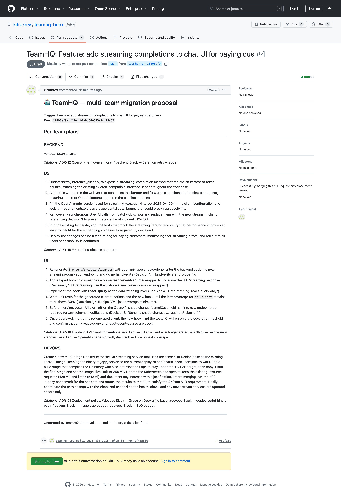
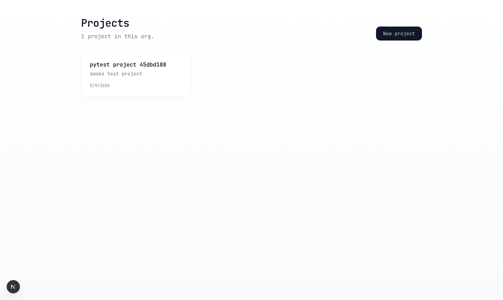
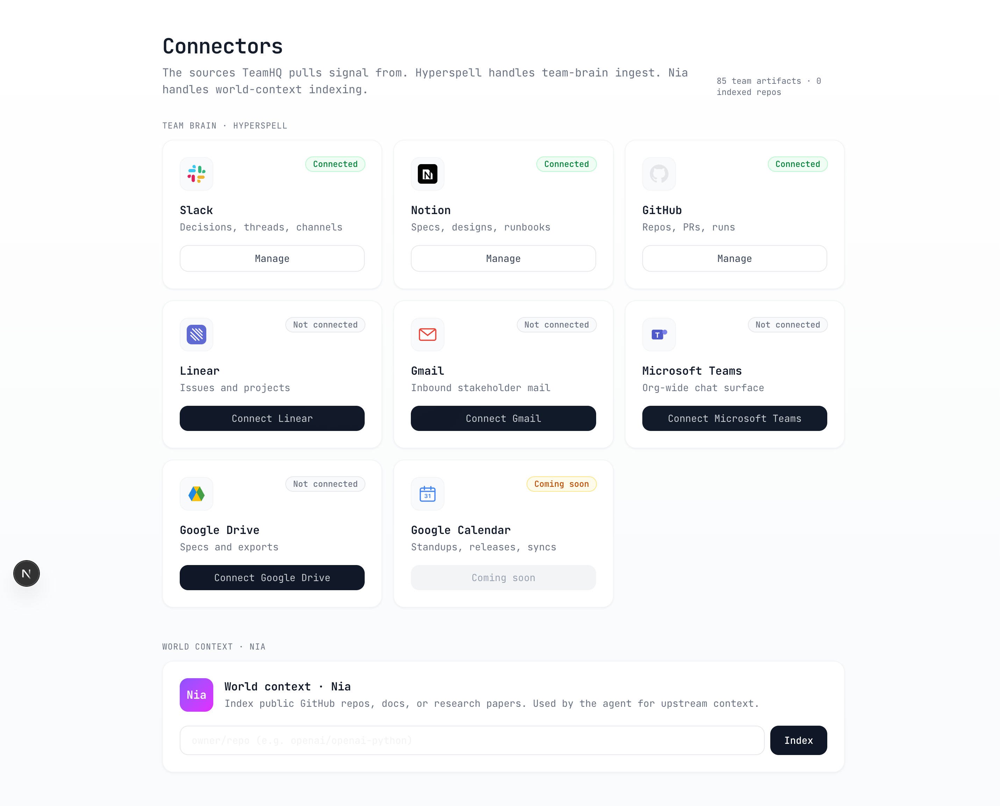
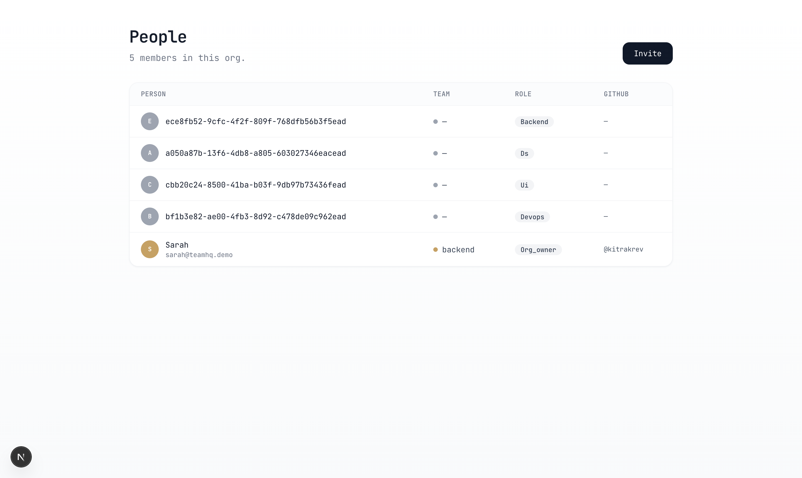

The engineering org's decision surface. Every code change starts here, gets routed to the right roles, and ships only after quorum.
Five questions. Keep your hand up if it's still you.
One teammate ran an agent across a migration. The PR opened as a fait accompli — the rest of the org saw it for the first time at review. CI passed. So we merged it.
"Looks good to me."
— a reviewer who did not read 691 files
Coding agents (Claude Code, Cursor, Devin, Codex) work for one developer at a time. Real engineering change touches every team the diff lands on. The gap between those two is where the regression lives.
No priors. No conventions. Agent looks brilliant.
A thousand decisions the agent never made. With strong unit tests on a vibe-coded source, the agent learns the shape of the bypass — and CI calls it green.
"With great power (coding agents) comes great responsibility — to ship at scale, in a codebase someone else has to maintain on Monday."
Major revamps are a team sport. The fix isn't a smarter agent — it's an org structure the agent has to ask permission from.
Devin, Codex, Claude Code — autonomous output is now hours of human work, daily.
Hyperspell-class indexing fuses Slack, Notion, GitHub, Linear into a single answer surface. ADR-12 is now a fact, not a folder.
Tensorlake-class firecracker microVMs make per-run, per-trigger code execution a 200 ms call away.
Without these three, TeamHQ is a Jira plugin. With them, it's the org's decision surface.
Routed to the right role. Grounded in the right team's brain. Verified in sandbox. Shipped only after quorum.

SDK upgrade, feature proposal, refactor, or migration. Source can be a webhook, cron, or a human in the UI.
For new features the agent drafts definition of done first. Each criterion gets a team owner + a verifiable test command.
Grounded in each lead's Hyperspell history (Slack, Notion, GitHub). Only the addressed user can answer; everyone else sees the citations.
Synthesised against that team's brain (gpt-oss-120b via Hyperspell). Cited by ADR + Slack thread.
Tensorlake firecracker microVM. Real network, real git + gh, ephemeral.
Default ON. PR cannot ship until every team lead approves their plan card.
Branch pushed via OAuth-scoped gh. Merge, comment, audit trail logged back to InsForge.
View the same feed as anyone. Only the right viewer can approve the right card. Anyone can comment.
Owns the OpenAI client conventions. Approves the BACKEND plan.
Owns embedding pipeline standards (ADR-15). Approves the DS plan.
Owns the auto-generated TS api-client + jest 80% floor.
Owns deploy policy, image-size budget, p99 SLO.
Cross-team override authority. Breaks ties. Logs to audit.
Files feature proposals. Triggers the AC flow.
For a feature proposal, the agent drafts the definition of done before any code is planned. Nine checkable items, each with a team owner and a verifiable shell command.

"Should we use the existing OpenAI client retry wrapper from #backend Slack — or does streaming need different retry logic?" The agent cites your ADR-12 + the exact Slack thread.

Each team's plan is synthesised against that team's Hyperspell collection — not a global prompt. The footnote sidebar pins every claim to an ADR or Slack thread. Approve, reject, or comment — gated by viewer role.

Tensorlake firecracker sandbox. git clone, branch, push, gh pr create. Body composed from per-team plans + citations. Draft #4, branch teamhq/run-1f408ef9.

Per-team Slack/Notion/GitHub/Linear · gpt-oss-120b.
Indexes upstream changelogs + public repos.
Firecracker microVMs · real git + gh.
Postgres + auth + AI gateway · one row per card.
Next.js 16 · multi-tenant · session-scoped.
Bring your coding agent.
Claude Code · Cursor · Codex · Devin. Decision history lives in TeamHQ. Switch agents mid-stream — context portable. MCP server ships 7 tools.
claude mcp add teamhq \ --env TEAMHQ_BASE=https://web-nine-lemon-57.vercel.app \ --env TEAMHQ_PERSONA=sarah \ -- python /path/to/teamhq_mcp.py
No team brain → no grounded questions → no cited plans → no quorum → no PR. The agent can't bypass; the org can't approve. Track 4's load-bearing pillar, baked in.
Quorum is not a checkbox. It's the product.
App Router · Tailwind 4 · streams cards every 2 s · PKCE OAuth (read + write GH scopes).
Custom Image() w/ git + gh · @application + @function · firecracker sandbox at runtime.
Postgres · orgs, org_members, teams, projects, runs, cards, oauth_tokens, audit_log · AI gateway.



Real multi-tenant. Every read scoped to the viewer's org_id from session — no env leak. New signups auto-provision tenant + default team + starter project.
git+gh · secrets vault · firecracker sandbox · AI gateway via InsForge.| Criterion | Weight | Where it lands | Evidence | Target |
|---|---|---|---|---|
| Cross-Source Synthesis | 30% | Per-team plans fuse Hyperspell (Slack + Notion + GitHub + Linear) + Nia (world context) + the repo state. Each team plan synthesises its own brain — not a global prompt. | Slide 10 · 19 cited brain artifacts on the demo run · gpt-oss-120b answers footnoted by ADR + thread URL | 5 · brain is the product |
| Real Work, Not Just Answers | 25% | Agent opens real PRs on real GitHub repos via OAuth-scoped gh. Branches push, draft PRs land, audit log writes back to InsForge. |
Slide 12 · github.com/kitrakrev/teamhq-hero/pull/4 · 4 PRs landed · multi-team plan in PR body | 5 · replaces hours of human work |
| Hyperspell Integration Depth | 25% | Hyperspell answers the per-role questions, grounds the per-team plans, and stores the team-brain itself. Disconnect Hyperspell → no questions, no plans, no quorum, no PR. Demo visibly degrades. | Slide 15 · TEAMHQ_BLOCK_UNTIL_APPROVED=1 default · agent/hyperspell.py · per-team scoping · open-weights gpt-oss-120b | 5 · removing it breaks the demo entirely |
| Demo & Presentation | 10% | Live demo + this deck + working MCP. Editorial UI carries the narrative without slide-handholding. Story (PR #1260) makes the case unforgettably. | Slides 02–04 (audience hooks + diagnosis) · 05–11 (live UI walkthrough) · 14 (Claude Code MCP) | 5 · story + demo make the case |
| Judge's Personal Rating | 10% | If you've ever rubber-stamped a 691-file PR, this is the surface you wish existed. | Real personas · real OAuth · real Slack/Notion seeded · real PRs · pluggable to Claude Code today | 5 · I want to see it succeed |